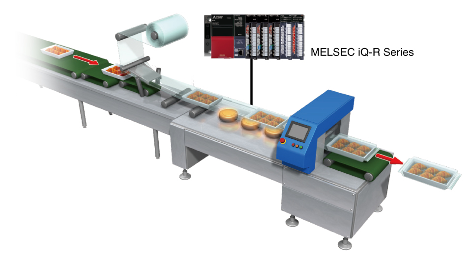
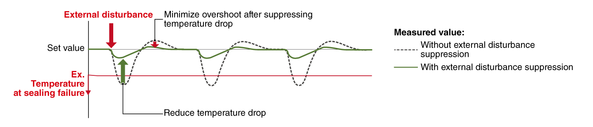
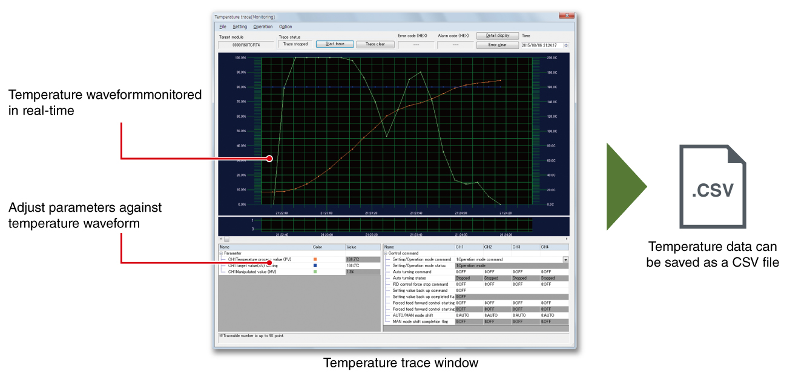
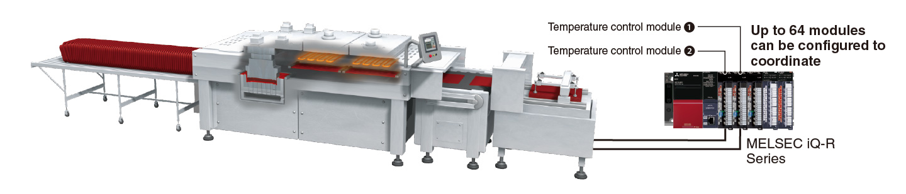
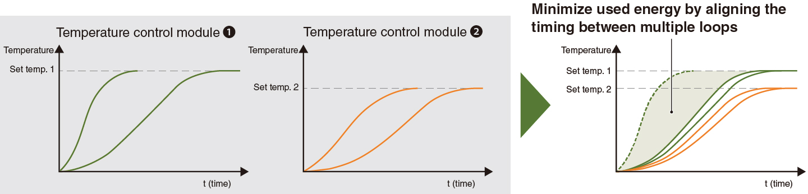
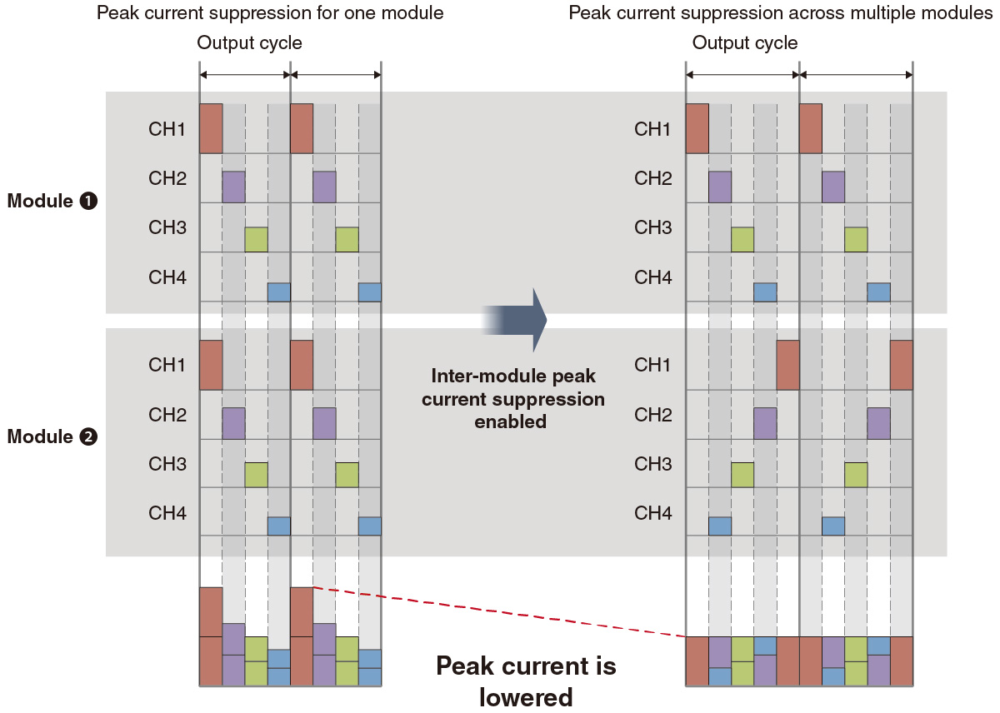

Controllers MELSEC iQ-R Series Fitur Produk -Temperature input module, Temperature control module-

Fitur
Dua jenis sensor suhu (thermocouple, RTD) didukung
- Modul mendukung dua jenis sensor suhu (thermocouple, RTD) untuk memenuhi berbagai persyaratan
| Item | R60TD8-G | R60RD8-G | R60TCTRT2TT2-TS | R60TCTRT2TT2 | R60TCTRT2TT2BW |
|---|---|---|---|---|---|
| Usable thermocouple | B, R, S, K, E, J, T, N | - | B, R, S, K, E, J, T, N, U, L, PLⅡ, W5Re/W26Re | ||
| Usable RTD | - | Pt100, JPt100, Ni100, Pt50 | Pt100, JPt100 | ||
| Item | R60TCRT4-TS | R60TCRT4 | R60TCRT4BW |
|---|---|---|---|
| Usable thermocouple | - | - | - |
| Usable RTD | Pt100, JPt100 | ||
Pemanasan terkendali meminimalkan distorsi dalam profil pemanasan<sup>Kontrol suhu</sup>
- Pengurangan tingkat penolakan
- Peningkatan produktivitas dan kualitas
- Fluktuasi suhu diredam dengan kecepatan tinggi melalui fungsi penekanan gangguan eksternal. Hal ini memungkinkan nilai suhu yang telah ditetapkan dipertahankan, memastikan profil pemanasan yang seragam dan tidak terpengaruh oleh variasi pemanasan pada produk
- Berkat kemampuan respons kecepatan tinggi, fungsi ini dapat digunakan dalam aplikasi seperti penyegelan mesin pengemasan, pencetakan injeksi, dan untuk pelat wafer dalam produksi semikonduktor

Penekanan gangguan eksternal

Pelacakan suhu mewujudkan pemantauan bentuk gelombang suhu waktu nyata<sup>Kontrol suhu</sup>
- Pelacakan suhu waktu nyata
- Ekspor sebagai file CSV
- Pengaturan parameter telah disederhanakan saat menggunakan fitur pelacakan suhu dari perangkat lunak rekayasa GX Works3. Fitur yang mudah digunakan ini memungkinkan pelacakan berbagai nilai suhu secara real-time, membantu memvisualisasikan kinerja kontrol sambil menyesuaikan parameter
- Nilai suhu juga dapat diekspor sebagai file CSV

Koordinasi antara beberapa modul kontrol suhu<sup>Kontrol suhu</sup>

Kenaikan suhu simultan antar-modul
- Kontrol suhu yang seragam
- Hemat energi
- Keseragaman suhu terwujud dengan menyelaraskan pengaturan waktu beberapa loop saat mencapai nilai yang ditetapkan
- Hingga 64 modul dapat dibagi menjadi 16 kelompok (maks.) dan fungsi kenaikan suhu simultan ditetapkan. Energi dihemat karena waktu yang dibutuhkan untuk kenaikan suhu dapat disesuaikan melalui seluruh sistem

Penekanan arus puncak antar-modul berkontribusi pada penghematan energi
- Penekanan arus puncak
- Pengurangan kapasitas catu daya
- Penghematan energi
- Arus puncak dikurangi dengan menyebarkan pengaturan waktu keluaran kontrol transistor
- Periode penggunaan daya tinggi dan rendah dikelompokkan bersama, mengurangi konsumsi energi fasilitas
